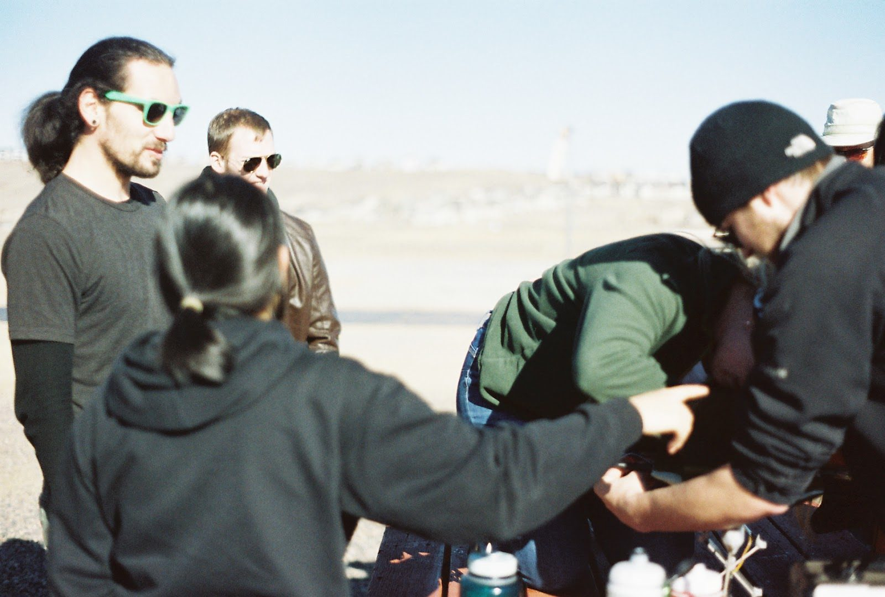
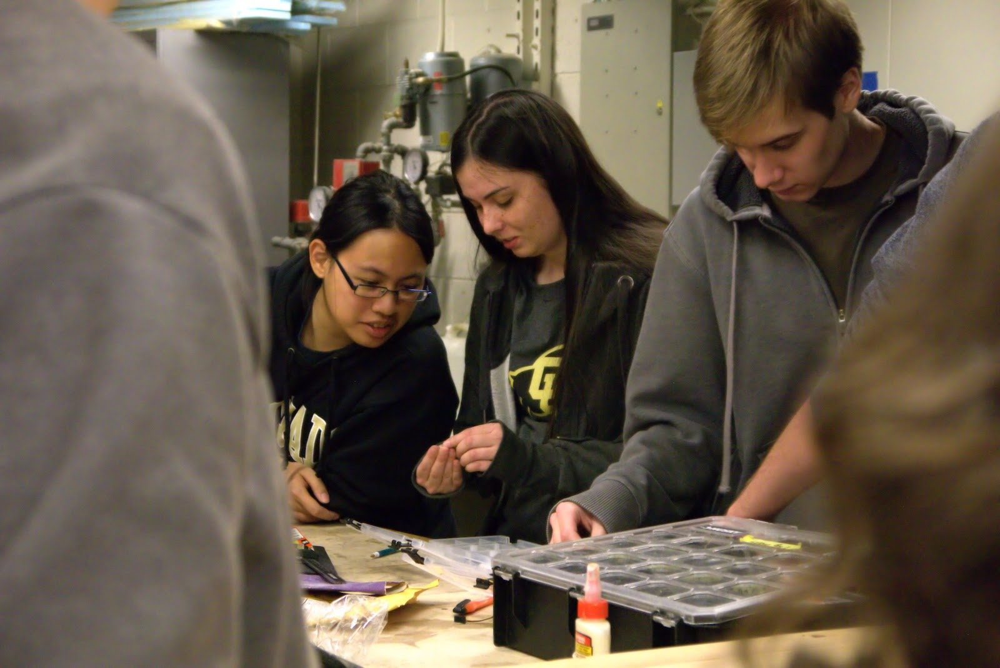

AIAA Design/Build/Fly
A full aircraft development cycle compressed into one academic year. Teams submit a written proposal, publish a design report, then fly the aircraft they built against a scored mission profile that changes every year.
Thirty years of student aircraft
Design/Build/Fly started in the 1996 to 1997 academic year, with eleven university teams flying at Ragged Island, Maryland, in April 1997. Cessna and the Office of Naval Research sponsored those early years; Raytheon joined in 2007, when the fly-off first came to Tucson. Today it is the Textron Aviation and Raytheon Student Design, Build, Fly Competition, run by AIAA's technical committees and the AIAA Foundation, and it draws more than 100 teams and 2,000 students a year.
Each year the organisers publish a new mission set. Teams design and build an uncrewed, electric, remote-controlled aircraft to fly it, write the work up in a scored report, and bring one airframe to the fly-off, which alternates between Wichita, Kansas, hosted by Textron Aviation, and Tucson, Arizona, hosted by RTX.
- Proposal · the top 100 proposals, plus ties, earn an invitation to the fly-off
- Design report · the scored engineering document, 85 percent of the report score
- Technical inspection · aircraft, batteries and payloads are checked before any flight
- Missions · three flight missions and a timed ground mission, each scored against the best team
Rules, schedule and every past result: aiaa.org/dbf
 Tucson fly-off
Tucson fly-offReport times missions, plus participation
Competition score is the total report score multiplied by the total mission score, plus a participation score. The report score is 15 percent proposal and 85 percent design report. The mission score is the sum of the three flight missions and the ground mission, each normalised against the best team that year.
Score = (0.15 × Proposal + 0.85 × Report) × (M1 + M2 + M3 + GM) + P
P is 1 for attending, 2 for passing technical inspection, 3 for attempting a flight mission. A strong report is worth nothing without flights, and a great aircraft is worth little without the report. Both have to be good.
The field we compete in
Proposals judged
Invited to report
Teams at the fly-off, 17 international
Teams that completed all four missions
2026 mission: a banner-towing bush plane flying passenger and cargo charter runs. Hosted by Textron Aviation in Wichita, Kansas, 16 to 19 April 2026, with 1,179 students from 12 countries. Winners: University of Ljubljana, University of Washington, UCLA.
From the rules to the runway
The season ends at the 31st fly-off in Tucson, Arizona. Dates below are AIAA's published schedule.

Build seasonRules release
AIAA publishes the year's rules. For 2027 the theme is a UAV with a sensor suite: deliver the UAV, carry sensors in shipping containers, then deploy, operate and recover a towed sensor. Maximum wingspan six feet.
Proposal window
Mission analysis decides what matters most, then a written proposal and team roster go to AIAA. The top 100 proposals, plus ties, are invited to submit design reports.
Invitations
AIAA notifies the invited teams. Only invited teams can go to the fly-off, and the proposal score counts for 15 percent of the report score.
Design reviews and build
Full CAD, structural analysis, propulsion testing, PDR and CDR with the faculty advisor, then the competition airframe goes together in the shop.
Design report
The scored engineering document, worth 85 percent of the report score. Teams that do not submit one are not allowed at the fly-off.
Flight test campaign
Test flights, fixes, mission rehearsals and technical inspection prep, then packing the aircraft for the trip.
Fly-off · Tucson, Arizona
Technical inspection Thursday, flying Friday to Sunday at the TIMPA field, hosted by RTX. The 31st AIAA Design/Build/Fly competition.
Every CU Boulder result since 2003
Straight from AIAA's published results. The team first appears in 2003, has three top-five finishes, and has had seasons where it did not make the fly-off. The 2026 to 2027 team is building to get back to Tucson.
Third place overall
A tornado cut the fly-off short and results were decided on two rotations. Colorado and UC Irvine were the only teams to complete all three missions.
Two fifth-place finishes
Fifth at Wichita in 2008 and fifth at Tucson in 2013, when only 12 teams completed every mission.
47th of 96 at the 29th fly-off
Invited, passed inspection and flew two missions with the pink airframe. The most recent fly-off result.
| Season | Fly-off | Aircraft | Result | Notes |
|---|---|---|---|---|
| 2025 to 2026 | Wichita, KS | — | Not invited to the fly-off | |
| 2024 to 2025 | Tucson, AZ | — | 47th of 96 attending teams | Flew two missions |
| 2023 to 2024 | Wichita, KS | — | Report scored, did not attend | |
| 2022 to 2023 | Tucson, AZ | — | Attended, did not pass inspection | |
| 2021 to 2022 | Wichita, KS | — | Report scored, no flight score | |
| 2020 to 2021 | Video competition | — | 87th | No fly-off that year |
| 2019 to 2020 | Cancelled | — | No entry in results | Fly-off cancelled for COVID-19 |
| 2018 to 2019 | Tucson, AZ | — | 38th | |
| 2017 to 2018 | Wichita, KS | — | 13th | |
| 2016 to 2017 | Tucson, AZ | — | No entry in results | |
| 2015 to 2016 | Wichita, KS | — | 33rd | |
| 2014 to 2015 | Tucson, AZ | Wiffle Buff | 34th | |
| 2013 to 2014 | Wichita, KS | ICU | 35th | |
| 2012 to 2013 | Tucson, AZ | Ralphie's Revenge | 5th | One of 12 teams to complete all three missions |
| 2011 to 2012 | Wichita, KS | H2BuffalO | 3rd | Best finish. Tornado-shortened fly-off |
| 2010 to 2011 | Tucson, AZ | Unmanned Aerial Buffalo | 11th | |
| 2009 to 2010 | Wichita, KS | Buff Bambino | 7th | |
| 2008 to 2009 | Tucson, AZ | Buff-2 Bomber | 14th | |
| 2007 to 2008 | Wichita, KS | Air Buffs A420 | 5th | |
| 2006 to 2007 | Tucson, AZ | Buffalo Wings | 7th | First Tucson fly-off |
| 2005 to 2006 | Wichita, KS | Buffaloader | 12th | |
| 2004 to 2005 | St. Inigoes, MD | Alpine Storm | 21st | |
| 2003 to 2004 | Wichita, KS | Water Buffalo | 35th | Report scored, no flight score |
| 2002 to 2003 | Ridgely, MD | Bellwether | 18th | First CU Boulder entry in AIAA results |
Source: AIAA Design/Build/Fly competition results and summaries, 2003 to 2026, at aiaa.org/dbf/previous-competitions. Aircraft names are listed where the team recorded them.
Help us get back to Tucson
Partners fund materials, travel and the workspace we build in. Students bring everything else.